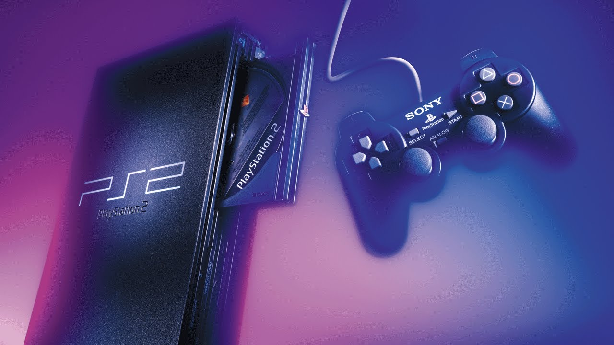

"La Evolución de los Videojuegos de PlayStation: Un Viaje a Través de las Generaciones"
Fecha: 5 de febrero de 2024
Desde su lanzamiento inicial en 1994, la marca PlayStation ha dejado una marca indeleble
en la industria de los videojuegos. Con cada nueva generación de consolas, Sony ha llevado
la experiencia de juego a niveles sin precedentes. Vamos a realizar un emocionante viaje a
través de las diferentes generaciones de PlayStation y explorar cómo han influido en la forma
en que jugamos y experimentamos los videojuegos.
"PlayStation: El Comienzo de una Era"
El lanzamiento de la primera consola PlayStation en 1994 marcó el inicio de una nueva era.Desarrollada por Sony Computer Entertainment,
la PlayStation original introdujo gráficos 3D y CD-ROM, llevando a los jugadores a un mundo de posibilidades visuales y narrativas. Títulos
icónicos como "Final Fantasy VII" y "Metal Gear Solid" se convirtieron en hitos que definieron el estándar de calidad para los videojuegos.
PlayStation 2: La Consola Más Vendida de la Historia
La PlayStation 2, lanzada en el año 2000, se consolidó como la consola más vendida de todos los tiempos.
Su impresionante biblioteca de juegos, que incluía éxitos como "Grand Theft Auto: San Andreas" y
"Shadow of the Colossus", catapultó a la PS2 al estrellato. Además, la introducción del reproductor de DVD
en la consola amplió su atractivo más allá del mundo de los videojuegos.

PlayStation 3: La Era del Entretenimiento Multimedia
Con el lanzamiento de la PlayStation 3 en 2006, Sony buscó integrar el entretenimiento multimedia en una única plataforma.
La consola ofrece gráficos de alta definición, Blu-ray y servicios en línea, abriendo nuevas posibilidades para la experiencia
de juego y entretenimiento en el hogar. Títulos como "The Last of Us" y "Uncharted" establecen nuevos estándares de narrativa y diseño de juegos.
PlayStation 4: La Revolución Social y la Realidad Virtual
La PlayStation 4, lanzada en 2013, marcó el auge de las redes sociales en los videojuegos. La capacidad de compartir capturas de pantalla y vídeos
directamente desde la consola transformó la forma en que los jugadores compartían sus experiencias. Además, la introducción de la realidad virtual
con PlayStation VR abrió nuevas de fronteras de inmersión.
PlayStation 5: Potencia y Velocidad para la Nueva Generación
Con su lanzamiento en 2020, la PlayStation 5 lleva la experiencia de juego a un nivel superior con hardware de vanguardia y una capacidad de carga ultrarrápida.
Juegos como "Demon's Souls" y "Spider-Man: Miles Morales" destacan las capacidades gráficas y la velocidad mejorada de la consola, prometiendo una nueva era
de experiencias de juegos asombrosos.
El Futuro: Más Allá de las Consolas
A medida que miramos hacia el futuro, la marca PlayStation continúa evolucionando. La integración de servicios en la nube, la expansión del juego en línea y la colaboración con desarrolladores de todo el mundo sugieren que el impacto de PlayStation en la industria de los videojuegos seguirá siendo profundo y duradero.
La historia de PlayStation es una crónica de innovación y adaptación a lo largo de los años. Con cada nueva generación, Sony ha desafiado los límites de lo posible, creando no solo consolas, sino plataformas de entretenimiento que han definido generaciones de jugadores.